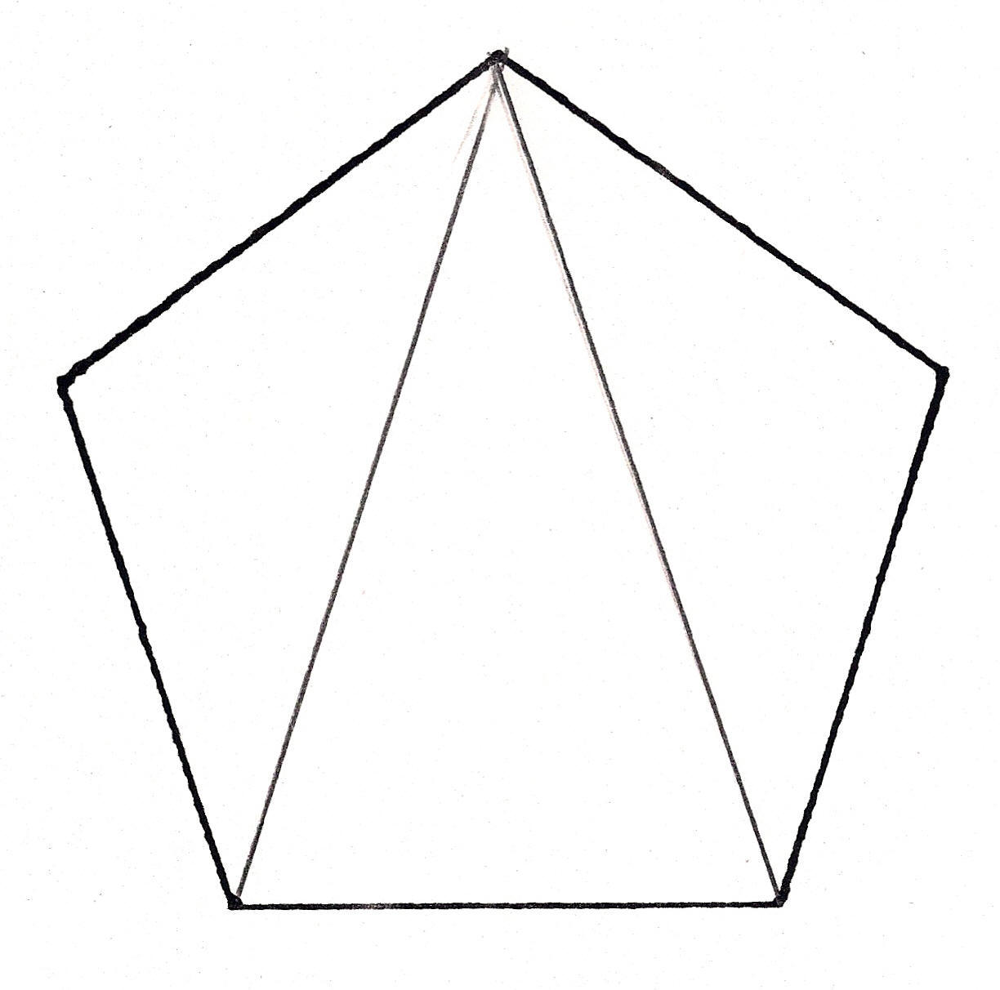

Brenda Studies a Regular Pentagon
Looking at a regular pentagon: Don defined the regular pentagon as a 5-sided polygon, all of whose sides are equal and whose interior angles are all equal.
Don drew one diagonal (a segment joining 2 non-adjacent vertices). Then Don asked Brenda how many degrees in the sum of interior angles of the triangle; she knew this was 180oand it was an isosceles triangle.

Then Don asked her to draw a second diagonal. The asked her to find the sum of the interior angles of the pentagon and the number of degrees in each interior angle of the pentagon.

Brenda found the sum of the interior angles of the pentagon is 540o and each angle (all equal), is 108o
Then he asked her to draw all the diagonals in the pentagon, then find all the angles. How many different size angles are formed?
Brenda found only 3 different size angles 36 o, 72o and 108o.
Then he asked Brenda to measure the diagonal in mm, and a side in mm, then find the ratio of the diagonal to the side. Then find the ratio of the Sin 72o to the Sin 36o. Her results are on the page below..
Brenda found the ratio of the diagonal to the side of the pentagon was 1.6 and the ratio of the sin 72oto the sin 36o is also 1.618.
They talked about the ratios she found to be approximations of the golden mean or divine proportion 1.618033...She also saw another pentagon inside the original, and talked about extending the sides of the original pentagon to get a larger one. And a pentagram (star) was also formed inside the original pentagon. Don later found someone on Mathfuture google group had proven that the sum of the angles of the pentagram touching the vertices of the original pentagon, is 180o.
Fine job Brenda!!
See other links to the golden mean and Fibonacci numbers are at the lower left, on Don's A Map To Calculus